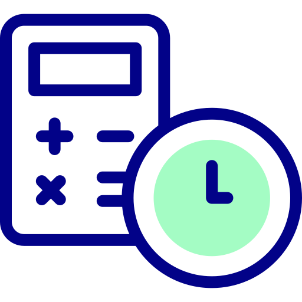

<!-- tools-content.html -->
<div class="tools-container">
    <!-- Menu vertical à esquerda -->
    <aside class="tools-menu">
      <ul>
        <li class="active" data-page="quilometragem.html">
          
          <span class="tooltip">Quilometragem</span>
        </li>
        <li data-page="conversao.html">
          
          <span class="tooltip">Conversão de Horas</span>
        </li>
        <li data-page="peso.html">
          
          <span class="tooltip">Peso e Balanceamento</span>
        </li>
      </ul>
    </aside>
  
    <!-- Área de conteúdo para exibição das ferramentas -->
    <div class="tools-content">
      <section id="toolsContentArea">
        <!-- O conteúdo padrão será carregado automaticamente (por exemplo, quilometragem.html) -->
      </section>
    </div>
  </div>
  